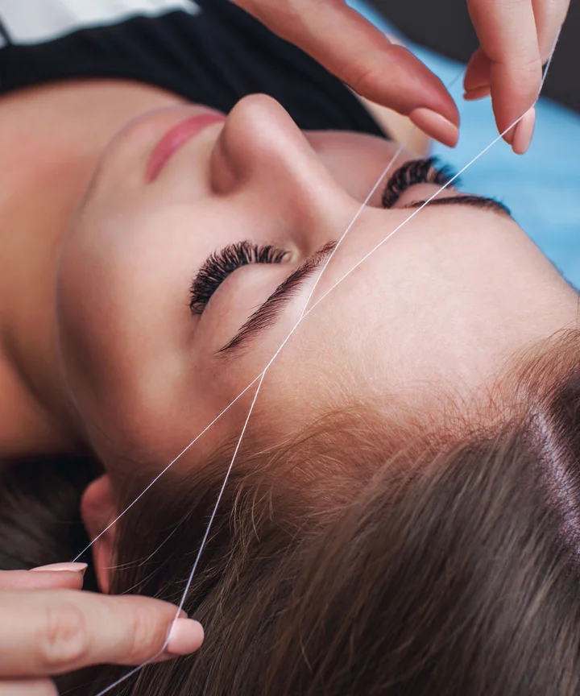

Classic Eyebrow Threading
When it comes to traditional eyebrow threading in Smithfield or any other suburbs, this is the technique that is mostly used. Here, the beautician will create a natural arch following your natural eyebrow curve.
If you have thick eyebrows, you should choose this technique to make yourself look more attractive. In fact, if you have a symmetrical face, this type of eyebrows can make you look appealing.
S-Shaped Brow Threading
If you have a heart-shaped face, the S-shaped eyebrow threading style can suit you best. Typically, individuals with a narrow forehead will love this style since the beautician performing eyebrow threading in Austral and the other suburbs will create a soft curve at the place where the eyebrow starts out. However, in the middle, she will create a sharp edge and fall back to the gentle curve again at the end of the eyebrow.
Feathered Eyebrow Threading
Do you want a soft, natural look? You need to opt for the feathered eyebrow threading style then since the esthetician will create a natural look by removing unwanted hair with a pattern like a feather.
You should choose this style if you have thin or sparse hair in your eyebrows. This style will make your brows look fuller and more defined.
Bold Threading
If you need to stand out from the rest, choose this type of eyebrow threading done at a reputable beauty salon in Wetherill Park or any of the other mentioned suburbs.
In this bold eyebrow threading technique, the beauticians will create a strong and thick eyebrow shape to add character and definition to your face. However, you should only choose this style if you have a square or heart-shaped face.